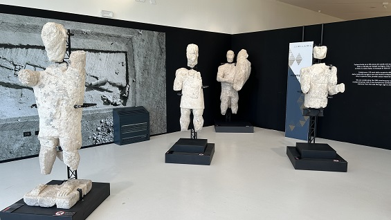

M硬 info: https://monteprama.it/

Los Gigantes de Mont'e Prama
Los llamados Gigantes de Mont'e Prama son
actualmente 28 estatuas de piedra caliza
de unos 2 metros de altura, que representan guerreros, y cuyos fragmentos fueron
hallados en 1974, a los pies de la colina de Mont'e
Prama. Entre 1975 y 1979 se encontraron 5178 fragmentos de estatuas.
La
zona no ha sido excavada en su totalidad.
La mayor眼 de los arque肇ogos afirma que pertenecen al siglo
VIII a.e.c.
Los gigantes representan a guerreros: 16 son un g輹ero de boxeadores, con un
escudo en la mano izquierda y el pu絪 cerrado en la derecha, 6 son arqueros, con
el arco en la izquierda y la mano derecha en signo de oferta a la divinidad; 6
son guerreros que llevaban un escudo redondo.
Los guerreros presentan caracter押ticas que se repiten, pero se han notado
peque絪s detalles que los diferencian, pues ser眼n la obra de artistas
diferentes en el mismo contexto.
Como las han encontrado en una necr調olis, los estudiosos han deducido que
formaban parte de un "Heroon", es decir un templo que ten眼 la funci蚤 de
celebrar los antepasados de una familia aristocr磬ica de la
馥oca, monumentalizando la figura humana, y subrayando las dimensiones militar y
religiosa.
|

M硬 info: https://monteprama.it/ |
|
| ITALIA ROMANA | CERDE헤 | MEN，/font> |